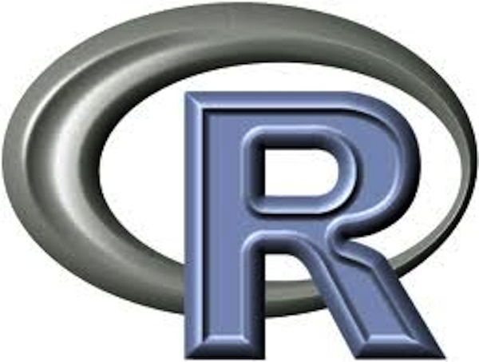

Open Science / Research w/ R featuring rOpenSci
Scott Chamberlain (@sckottie/@ropensci)
UC Berkeley / rOpenSci


scotttalks.info/cdc18
pdf slides 960x720
pdf slides 1280x720
LICENSE: CC-BY 4.0
Keyboard shortcuts: press ?
open science/research
Open science as a lego set
Open science as a lego set
open science may be hard to do
but - you can work on different components
and - individual components are worth learning
Open Data
(at least within your organization)
funders/journals often requiring this anyway
future self will thank you
Versioning: code/data/text
xkcd.com/1597

Versioning: code/data/text
failure proofs your work
experiment freely!
makes collaboration easier
Do all work programatically

from geeksaresexy.net/2012/01/05/geeks-vs-non-geeks-picture
Do all work programatically
Key to reproduciblity
Most important person that wants to reproduce your work is you!
Do all work programatically
you and yourself
- one week from now
- two months from now
- & so on
An example to shoot for
important (higher level) scientific programming languages



R language
used widely in biology, psychology, medicine, etc.
rapidly growing user base, companies surrounding it
includes all tools for open science workflow
though work to be done ...
Open science ecosytsem
rOpenSci Does
rOpenSci Staff
ropensci.org/about/#team
~5 full time
leadership team
advisory board
Community stats
~ 400 code contributors
~ 490 Github repositories (most are R packages)
~ 45,000 commits
~ 160 published R packages on CRAN (another ~100 not on CRAN)
rOpenSci Unconference
unconf18.ropensci.org
Nominations (including self) close Mar. 8th
the research workflow
Data acquisition
data manipulation/analysis/viz
writing
publish
the research workflow
Data acquisition
data manipulation/analysis/viz
writing
publish
the research workflow
Data acquisition
data manipulation/analysis/viz
writing
publish
the research workflow
Data acquisition
data manipulation/analysis/viz
writing
publish
the research workflow
Data acquisition
data manipulation/analysis/viz
writing
publish
rOpenSci Tools
ropensci.org/packagesrOpenSci Software: some of the benefits
reduce redundant small software efforts
funnel effort into sustainable, well-maintained software (see lack of support for software MAINTANENCE in academia)
bring maintainers into a community
give otherwise isolated projects a louder voice
hopefully we make each piece of software more sustainable
but, software sustainability is hard
each panel is a package, each dot a person
rOpenSci software used in
research
within companies
fun side projects
journalism
and more
here are some of the academic research uses
... usually found in methods section of papers
use case 1
We used the rentrez R package to execute the query on GEO [Gene Expression Omnibus] ...
use case 2
We compiled 16 studies of BSD [bird seed dispersal]-interactions in fragments of the SE Brazilian Atlantic Forest ... We updated species names with taxize package (Chamberlain & Szocs 2013).
use case 3
To fill in missing elevation records and correct elevation records ... we estimated altitude ... using the GNsrtm3 function within the geonames package ...
rOpenSci *omics Tools
Taxonomy
taxa - Taxonomic classes and taxonomically aware data manipulation
taxize - Taxonomic "toolbelt" - work w/ taxonomy web APIs
taxizedb - taxize, but with local SQL databases
rentrez - NCBI's Entrez services
biomartr - Biomart R client
genbankr - Parse GenBank files into useful objects
rsnps - SNPs data retrieval
(although most omics R packages are in Bioconductor,
rOpenSci is open to submissions!)
Taxonomic IDs
always try to move from:
taxonomic name -- to
taxonomic ID -- to
whatever other data
Genomic Data Retrieval - biomartr Interfaces to:
Spatial tools
Spatial
geojson - GeoJSON classes
geojsonio - GeoJSON/TopoJSON input/output
geojsonlint - lint GeoJSON
geoops - fast C++ based GeoJSON operations
geonames - Geonames API client
lawn - Turf.js javascript GeoJSON operations
wicket - Well-Known Text tools
wellknown - WKT <-> R objects
rnaturalearth - NaturalEarth data
osmplotr - Open Street Maps plots
osmdata - Open Street Maps data
opencage - OpenCage geocoding API
Geospatial: conversion between data/spatial data formats - geojsonio
geojson_list - convert to GeoJSON as R list
geojson_json - convert to GeoJSON as JSON
geojson_read/geojson_write - read/write GeoJSON
from most R object types + many spatial data formats
geojson workflow
we're trying for a GeoJSON workflow in R, w/o heavy dependencies like GDAL/GEOS - get in touch if you have any interest
Climate data tools
Climate data
rnoaa - NOAA climate data
isdparser - parse NOAA Integrated Surface Data Files
FedData - various US federal datasets (DEM's, hydrography, soil survey, climate, etc.)
weathercan - Environment and Climate Canada data
getCRUCLdata - CRU CL v. 2.0 Climatology Elements
GSODR - Global Summary Daily Weather Data
NOAA climate data - rnoaa
NCDC API
Severe weather data
Sea ice data
NOAA buoy data
Tornadoes
HOMR - Historical Observing Metadata Repository
Storm data
GHCND FTP data
Global Ensemble Forecast System (GEFS) data
Extended Reconstructed Sea Surface Temperature (ERSST) data
Argo buoys data
NOAA CO-OPS - tides and currents data
NOAA Climate Prediction Center (CPC)
Africa Rainfall Climatology version 2
Wrapping web APIs
Wrapping web APIs:
High level concepts
Each pkg is a snowflake: every web API is different
Try to cater to both beginners and power users
Fail fast and fail well: APIs may not do it for you
Pass on curl options! empower your users to:
investigate http request problems
set proxy options (IT often blocks certain sites/ports)
and more
Defensive programming
Fail fast
Defend against many things
Give users good errors
Check out my defensive programming chapter
Example pkg wrapping web API
ritis: client for ITIS taxonomic data
ritis: notes/thoughts
imports: solrium, crul, jsonlite, data.table, tibble
package API: fxns for REST API and Solr API
a downside of this package possibly: a lot of functions
return tibbles from all functions
but
rawJSON/XML output for those that want itSolr queries handled by solrium package
Combining many sources into one package
Many into one considerations
Is it really a good idea?
Inputs:
What parameters can be unified across sources?
Allow users to fiddle with sources specific options
Fail consistently across sources if possible
Outputs:
What if any outputs can be combined
Many into one e.g.: spocc
Many into one e.g.: spocc
All 10 sources share common input: taxonomic names
Pagination is similar-ish across sources (requires some source specific variable mapping)
Geospatial search: WKT and bounding boxes then map to what source requires
Most can toggle whether to return records that have coordinates or not
Outputs: combine the minimum set of similar fields
Software Review
rOpenSci Software Review
R package maintainer submits to ropensci/onboarding
Editors determine fit or not a fit
Editors assign reviewers
Reviewers have ~ 3 weeks
Reviewers and maintainer go back and forth refining pkg
After approval, pkg moved to rOpenSci
A number of e.g.'s of pkgs from government agencies (including Canada)
rOpenSci Software Review
rOpenSci Onboarding